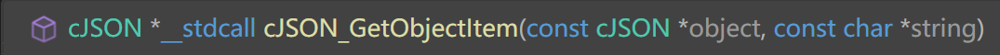
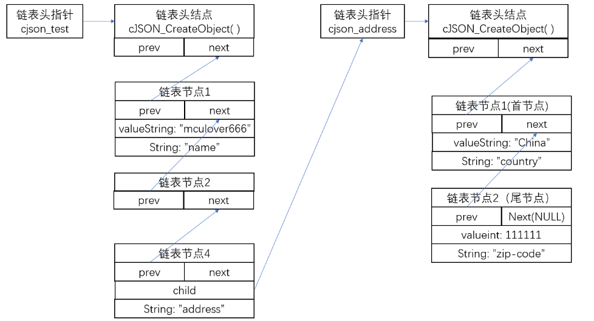

利用cJSON库来解析json文件
cJSON是一个使用C语言编写的JSON数据解析器，具有超轻便，可移植，单文件的特点，使用MIT开源协议。
#include <cJSON.h>使用前需要引用这个库
同时将csjon.c放到工程目录
JSON语法规则
JSON对象是一个无序的”名称/值”键值对的集合：
- 以”
{“开始，以”}“结束，允许嵌套使用； - 每个名称和值成对出现，名称和值之间使用”
:“分隔； - 键值对之间用”
,“分隔 - 在这些字符前后允许存在无意义的空白符；
json常见对象类型
cjson对应json对象给出的类型宏
#define cJSON_Invalid (0)
#define cJSON_False (1 << 0)
#define cJSON_True (1 << 1)
#define cJSON_NULL (1 << 2)
#define cJSON_Number (1 << 3)
#define cJSON_String (1 << 4)
#define cJSON_Array (1 << 5)
#define cJSON_Object (1 << 6)
#define cJSON_Raw (1 << 7) /* raw json */
对于键值，可以有如下值：）
- 一个新的json对象（cJSON_Object）
- 数组：使用”
[“和”]“表示（cJSON_Array ） - 数字：直接表示，可以是整数，也可以是浮点数（cJSON_Number）
- 字符串：使用引号
"表示（cJSON_String） - 字面值：false、null、true中的一个(必须是小写)（ cJSON_Invalid,cJSON_False,cJSON_True,cJSON_NULL)
示例：
{
"name": "mculover666", //键为name，值为string
"age": 22, //值为number
"weight": 55.5,
"address": //address是一个对象object，里面有俩个属性
{
"country": "China",
"zip-code": 111111
},
"skill": ["c", "Java", "Python"], //skill是一个数组对象，里面是string
"student": false //这就是一个字面值false
}
cJson结构体
typedef struct cJSON
{
struct cJSON *next;
struct cJSON *prev;
struct cJSON *child;
int type;
char *valuestring;
int valueint;
double valuedouble;
char *string;
} cJSON;
首先，它不是将一整段JSON数据抽象出来，而是将其中的一条JSON数据抽象出来，也就是一个键值对，用上面的结构体 strcut cJSON 来表示，其中用来存放值的成员列表如下：
String：用于表示该键值对的名称；就是对象的名称
type：用于表示该键值对中值的类型；
valuestring：如果键值类型(type)是字符串，则将该指针指向键值；
valueint：如果键值类型(type)是整数，则将该指针指向键值；
valuedouble：如果键值类型(type)是浮点数，则将该指针指向键值；
其次，一段完整的JSON数据中由很多键值对组成，并且涉及到键值对的查找、删除、添加，所以使用链表来存储整段JSON数据，如上面的代码所示：
next指针：指向下一个键值对prev指针指向上一个键值对
最后，因为JSON数据支持嵌套，所以一个键值对的值会是一个新的JSON数据对象（一条新的链表），也有可能是一个数组，方便起见，在cJSON中，数组也表示为一个数组对象，用链表存储，所以：
在键值对结构体中，当该键值对的值是一个嵌套的JSON数据或者一个数组时，由child指针指向该条新链表。
[{
"interval": 1,
"rewards": 100,
"spawn_list": [{
"interval": 1,
"point": 1,
"enemy": "Slim"
}, {
"interval": 1,
"point": 2,
"enemy": "KingSlim"
}, {
"interval": 1,
"point": 1,
"enemy": "Goblin"
}, {
"interval": 1,
"point": 2,
"enemy": "GoblinPriest"
}, {
"interval": 1,
"point": 1,
"enemy": "Skeleton"
}]
}, {
"interval": 3,
"rewards": 100,
"spawn_list": [{
"interval": 3,
"point": 2,
"enemy": "KingSlim"
}]
}]
//本身整体就是一个大数组，大数组里面有俩个{}{}对象其实是波次，波次里面还有三个对象，间隔，奖励，敌人列表（又是数组）
bool load_level_config(const std::string& path)
{
std::fstream file(path);
if (!file.good())return false;
std::stringstream str_stream;
str_stream << file.rdbuf();
file.close();
cJSON* json_root = cJSON_Parse(str_stream.str().c_str());
if (!json_root) return false;
if (json_root->type != cJSON_Array)
{
cJSON_Delete(json_root);
return false;
}
cJSON* json_wave = nullptr;
cJSON_ArrayForEach(json_wave, json_root)
{
if (json_wave->type != cJSON_Object)
continue;
wave_list.emplace_back();
Wave& wave = wave_list.back();
cJSON* json_wave_rewards = cJSON_GetObjectItem(json_wave, "rewards");
if (json_wave_rewards && json_wave_rewards->type == cJSON_Number)
wave.rewards = json_wave_rewards->valuedouble;
cJSON* json_wave_interval = cJSON_GetObjectItem(json_wave, "interval");
if (json_wave_interval && json_wave_interval->type == cJSON_Number)
wave.interval = json_wave_interval->valuedouble;
cJSON* json_wave_spawn_list = cJSON_GetObjectItem(json_wave, "spawn_list");
if (json_wave_spawn_list && json_wave_spawn_list->type == cJSON_Array)
{
cJSON* json_spawn_event = nullptr;
cJSON_ArrayForEach(json_spawn_event, json_wave_spawn_list)
{
if (json_spawn_event->type != cJSON_Object)
continue;
wave.spawn_event_list.emplace_back();
Wave::SpawnEvent& spawn_event = wave.spawn_event_list.back();
cJSON* json_spawn_event_interval = cJSON_GetObjectItem(json_spawn_event, "interval");
if (json_spawn_event_interval && json_spawn_event_interval->type == cJSON_Number)
spawn_event.interval = json_spawn_event_interval->valuedouble;
cJSON* json_spawn_event_spawn_point = cJSON_GetObjectItem(json_spawn_event, "point");
if (json_spawn_event_spawn_point && json_spawn_event_spawn_point->type == cJSON_Number)
spawn_event.spawn_point = json_spawn_event_spawn_point->valueint;
cJSON* json_spawn_event_enemy_type = cJSON_GetObjectItem(json_spawn_event, "enemy");
if (json_spawn_event_enemy_type && json_spawn_event_enemy_type->type == cJSON_String)
{
const std::string str_enemy_type = json_spawn_event_enemy_type->valuestring;
if (str_enemy_type == "Slim")
spawn_event.enemy_type = EnemyType::Slim;
else if (str_enemy_type == "KingSlim")
spawn_event.enemy_type = EnemyType::KingSlim;
else if (str_enemy_type == "Skeleton")
spawn_event.enemy_type = EnemyType::Skeleton;
else if (str_enemy_type == "Goblin")
spawn_event.enemy_type = EnemyType::Goblin;
else if (str_enemy_type == "GoblinPriest")
spawn_event.enemy_type = EnemyType::GoblinPriest;
}
}
if (wave.spawn_event_list.empty())
wave_list.pop_back();
}
}
cJSON_Delete(json_root);
if (wave_list.empty())
{
return false;
}
return true;
}
- 首先利用fstream打开文件，利用stringstream读取文件的内容，然后转换为c语言风格的字符串格式，利用其转化为cjson形式的对象，并返回指针。首先获取的就是数组对象，波次数组
1. cJSON json_root = cJSON_Parse(str_stream.str().c_str());（将c风格char的字符串转换为cjon格式并返回指针）
然后再创建一个cjosn指针遍历这个数组，有专门的遍历函数
2.cJSON_ArrayForEach(json_wave, json_root)（类似for(int &tmp:(vectorobject)） 然后在读取的又是一个对象{}
if (json_wave->type != cJSON_Object)//检查读取的是否正确
- 进一步读取对应的键值
3.cJSON json_wave_rewards = cJSON_GetObjectItem(json_wave, “rewards”);*
cJSON* json_wave_rewards = cJSON_GetObjectItem(json_wave, "rewards");
if (json_wave_rewards && json_wave_rewards->type == cJSON_Number)
wave.rewards = json_wave_rewards->valuedouble;
//显示第一个波次对象{}，获取键为“rewards”的对象指针，然后检查其是否存在值的类型是否为数值
//然后数值存在valuedouble变量里面
- 后面读取敌人生成序列的逻辑也是一样的
cJSON使用过程中的内存问题
内存及时释放
cJSON的所有操作都是基于链表的，所以cJSON在使用过程中大量的使用malloc从堆中分配动态内存的，所以在使用完之后，应当及时调用下面的函数，清空cJSON指针所指向的内存，该函数也可用于删除某一条数据：
cJSON_Delete(cJSON *item);
//本段删除最初的节点
cJSON_Delete(json_root);
注意：该函数删除一条JSON数据时，如果有嵌套，会连带删除。
